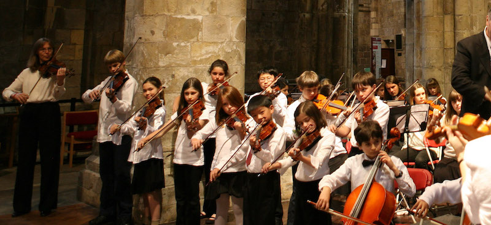

Tours
Tours are scheduled every two or three years. Our upcoming in 2017 will be to Vienna and Budapest where we will perform at Esterhazy Hall. Previous tours have included:
1994 Pacific Basin Music Festival in Hawaii: We won the Gold Medal!
1996 Austria and Germany: We performed the Mozart Mass with another orchestra and choir in Munich and performed in Salzburg. We also participated in the Second International Munich Music Festival.
1997 San Francisco International Music Festival: in Herbst Theatre.
1999 England and Ireland: We were the orchestra in residence at the 21st Shrewsbury International Music Festival, and in other venues in England and Ireland.
2002 Carnegie Hall: as part of the ‘Debut Series’.
2005 Prague and Italy: Our orchestra of 90 people performed in Rome, Siena and Prague with stops also in Florence, Venice and Salzburg. There were a total of 173 people on the tour! See photos from 2005 Prague and Italy Tour taken by Susan Beauchamp
2008 Scotland and England: The orchestra and preparatory students performed at Greyfriars Kirk in Edinburgh, Selby Abbey in the North of England, St. Cuthbert’s in Bath/Bristol area, and St. John’s Waterloo in London.
2011 Washington, D.C. June 22-28: VSF performed at Kennedy Center, Alexandria and at the Washington Monument. Click to see Kennedy Center performance
2014 France: The orchestra and preparatory students performanced in Château_d’Amboise, Loire Region and La Madeleine, Paris. See photos here!
2015 Tour to Carnegie Hall: VSF performed another beautiful concert at Carnegie Hall! See photos here!
2017 Tour to Vienna and Budapest: VSF performed at the esteemed Esterhazy Palace where the composer Joseph Haydn had worked for nearly 30 years!
